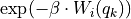
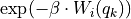

Extensions – thermolib.ext
- thermolib.ext.wham1d_bias(int Nsims, int Ngrid, double beta, list biasses, double delta, int bias_subgrid_num, ndarray bin_centers, double threshold=1e-3)
Compute the integrated boltzmann factors of the bias potentials W in each grid interval:

This routine implements a conservative algorithm which takes into account that for a given simulation i, only a limited number of grid points k will give rise to a non-zero
 . This is achieved by first using the bin-center approximation to the integral by computing the factor  on the CV grid (which is faster as there is no integral involved and which is also already a good approximation for the b array) and only performing the precise integral when the approximation exceeds a threshold.
. This is achieved by first using the bin-center approximation to the integral by computing the factor  on the CV grid (which is faster as there is no integral involved and which is also already a good approximation for the b array) and only performing the precise integral when the approximation exceeds a threshold.- Parameters:
bias_subgrid_num – the number of grid points used by the
wham1d_biasroutine for the sub-grid to compute the boltzmann-integrated bias factors in each CV bin. :type bias_subgrid_num: int, optional, default=20threshold – see general documentation above
- thermolib.ext.wham1d_error(int Nsims, int Ngrid, ndarray Nis, ndarray ps, ndarray fs, ndarray bs, ndarray corrtimes, method='mle_f_cov', p_threshold=0.0, verbosity='off')
- thermolib.ext.wham1d_hs(int Nsims, int Ngrid, ndarray trajectories, ndarray bins, ndarray Nis)
- thermolib.ext.wham1d_scf(ndarray Nis, ndarray Hs, ndarray bs, int Nscf=1000, double convergence=1e-6, double overflow_threshold=1e-150, verbose=False)
- thermolib.ext.wham2d_bias(int Nsims, int Ngrid1, int Ngrid2, double beta, list biasses, double delta1, double delta2, int bias_subgrid_num1, int bias_subgrid_num2, ndarray bin_centers1, ndarray bin_centers2, double threshold=1e-3)
Compute the integrated boltzmann factors of the biases in each grid interval:

This routine implements a conservative algorithm which takes into account that for a given simulation i, only a limited number of grid points (k,l) will give rise to a non-zero b_ikl. This is achieved by first using the bin-center approximation to the integral by computing the factor
 on the CV1 and CV2 grid (which is faster as there is no integral involved and which is also already a good approximation for the
on the CV1 and CV2 grid (which is faster as there is no integral involved and which is also already a good approximation for the  array) and only performing the precise integral when the approximation exceeds a threshold.
array) and only performing the precise integral when the approximation exceeds a threshold.
- thermolib.ext.wham2d_error(ndarray ps, ndarray fs, ndarray bs, ndarray Nis, ndarray corrtimes, method='mle_f', p_threshold=0.0, verbosity='off')
Internal routine to compute the error associated with solving the 2D WHAM equations using the Fisher information coming from the Maximum Likelihood Estimator. The procedure is as follows:
construct the extended Fisher information matrix by taking the weighted sum of the Fisher information matrix of each simulation. This is very similar as in the 1D case. However, we first have to flatten the CV1,CV2 2D grid to a 1D CV12 grid. This is achieved with the flatten function (which flattens a 2D index to a 1D index). Deflattening of the CV12 grid to a 2D CV1,CV2 grid is achieved with the deflatten function (which deflattens a 1D index to a 2D index). Using the flatten function, the ps array is flattened and a conventional Fisher matrix can be constructed and inverted. Afterwards the covariance matrix is deflattened using the deflatten function to arrive to a multidimensional matrix giving (co)variances on the 2D probability array.
filter out the zero-rows and columns corresponding to absent histogram counts using the masking procedure
invert the masked extended Fisher matrix and use the square root of its diagonal elements to compute errors
- Parameters:
ps (np.ndarray(Ngrid1, Ngrid2)) – the final unbiased probability density as computed by solving the WHAM equations.
fs (np.ndarray(Nsim)) – the final normalization factor for the biased probability density of each simulation as computed by solving the WHAM equations
bs (np.ndarray(Nsim,Ngrid1,Ngrid2)) – the biasses (for each simulation) precomputed on the 2D CV grid
Nis (np.ndarray(Nsims)) – the number of simulation steps in each simulation
method (str, optional, default='mle_f') –
Define the method for computing the error:
mle_p: the error is computed on the probability density directly. This method corresponds to ignoring the positivity constraints of the histogram parameters.
mle_f: the error is first computed on minus of the logarithm of the probability density (corresponding to the scaled free energy) and afterwards propagated to the probability density. This method corresponds to taking the positivity constraints of the histogram parameters explicitly into account.
- Note:
contains nan values at specific grid locations
- Note:
contains nan values at sim indices
- Returns:
Error distribution estimated according to method
- Return type:
Distribution, np.ndarray
- thermolib.ext.wham2d_hs(int Nsims, int Ngrid1, int Ngrid2, ndarray trajectories, ndarray bins1, ndarray bins2, ndarray Nis)
- thermolib.ext.wham2d_scf(ndarray Nis, ndarray Hs, ndarray bs, ndarray pinit, int Nscf=1000, double convergence=1e-6, double overflow_threshold=1e-150, verbose=False)
Internal routine to solve the 2D WHAM equations,
1/f_i = sum_k b_ik a_k
a_k = sum_i H_ik / sum_i N_i f_i b_ik
which clearly requires an iterative solution. To avoid floating point errors in the calculation of the first equation, we check whether f_i > overflow_threshold. Similarly, we check whether the denominator of eqution 2 > overflow_threshold. This corresponds to only keeping those simulations with relevant information.
- Parameters:
Nis (np.ndarray(Nsims, Ngrid1, Ngrid2)) – the number of simulation steps in each simulation
Hs – the histogram counts for each simulation, for each grid point
bs (np.ndarray(Nsims,Ngrid1,Ngrid2)) – the biasses (for each simulation) precomputed on the 2D CV grid
pinit (np.ndarray(Ngrid1, Ngrid2)) – the initial unbiased probability density
Nscf (int, optional, default=1000) – maximum number of scf cycles, convergence should be reached before Nscf steps
convergence (double, optional, default=1e-6) – convergence criterion for scf cycle, if integrated difference (sum of the absolute element-wise difference between subsequent predictions of the unbiased probability a_k) is lower than this value, SCF is converged
overflow_threshold (double, optional, default=1e-150) – numerical threshold to avoid overflow errors when calculating the normalization factors and the denominator of the unbiased probability a_k. This determines which simulations and which grid points to ignore. Decreasing it results in a FES with a larger maximum free energy (lower unbiased probability). If it is too low, imaginary errors (sigma^2) arise, so increase if necessary.